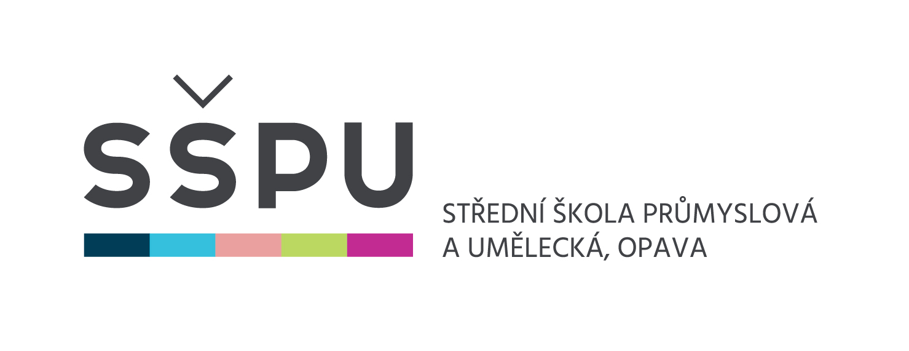

Aplikace jsou uživatelské programy určené pro jeden nebo více speci-fických účelů. Pro spouštění aplikací je nezbytná přítomnost základní-ho software - operačního systému.
Symbolický „balík“ programů obvykle tvoří textový pro-cesor, tabulkový procesor, nástroj na tvorbu prezentací, databázový systém, někdy i groupwarové nástroje (systémy organizování času, zajišťování schů-zek), grafické editory apod. Vedle komerčních Microsoft Office či Apple iWork existují také balíky OpenOffice nebo WPS Office, dostupné zdarma a pro řadu platforem.
Oblast grafiky je velmi široká; grafické programy umožňují vytvoření grafických dokumentů přímo v počítači, skenování papírových před-loh i zachycení obrazu digitálním fotoaparátem. Dominantní postavení v této oblasti zaujímá profesionální software firmy Adobe (např.Adobe Photoshop, Adobe Illustratoraj.). Mezi oblíbené multiplatformní opensource grafické ap-likace patří např. rastrový editor GIMP nebo vektorový Inkscape. Svébytné oblasti počítačové grafiky tvoří programy pro tvorbu animací, rozsáhlé kon-strukční systémy CAD(Computer Aided Design) nebo programy DTP (Desktop Publishing) určené pro tvorbu tiskovin.
Umožňují vytváření, zpracování a prezentaci mul-timediálních, tedy především audiovizuálních dat na počítači. Kromě nejrůz-nějších multimediálních přehrávačů zde můžeme zařadit řadu programů pro editaci digitálního zvuku nebo videa, programy pro tvorbu multimediálních pre-zentací, výukové programy, ale také rozsáhlou oblast počítačových her.
Slouží pro správu počítačo-vých sítí, vzdálené řízení počítače, přenos a přístup ke vzdáleným souborům a vzdálený tisk, pro připojení vnitřní podnikové sítě (intranet) na síť celosvětovou (Internet) přes poskytovatele Internetu. K základním uživatelským (klientským) aplikacím patří webové prohlížeče, klienty elektronické pošty a groupware (software pro skupinovou práci), prostředky online komunikace ( IM - Instant Messaging) a jiné.
Informační systémy (IS - information sys-tems) představují komplexní programové vybavení určité instituce nebo firmy. Základem IS jsou obvykle tzv. datové sklady ( data warehouse) založené na databázových systémech. Podnikové informační systémy bývají označovány zkratkou ERP (Enterprise Resource Planning) a jsou tvořeny celou řadou díl-čích programových modulů (např. moduly pro výrobu, logistiku, správu ma-jetku, účetnictví ...) K lídrům v oblasti informačních i databázových systémů patří velké firmy jako Oracle, Microsoft , IBM, SAP. Kromě komplexních IS jsou vyvíjeny mnohé specializované aplikace pro podporu výrobních procesů, eko-nomických transakcí a nejrůznějších jiných pracovních činností.
Zatímco malware je počítačový program určený ke vniknutí nebo poškození počítačového systému, cílem antivirových programů (např. AVG, AVAST, ESET, Kaspersky Antivirus atd.) je chránit počí-tačové systémy před tímto nežádoucím softwarem.
Obvykle jsou označována zkratkou IDE (In-tegrated Development Environment) a používají je programátoři k vývoji aplika-cí. Tradičně je tvoří editor s různými pomůckami pro psaní programového kódu, ladicí prostředky, překladače a další nástroje zefektivňující práci vývojářů.